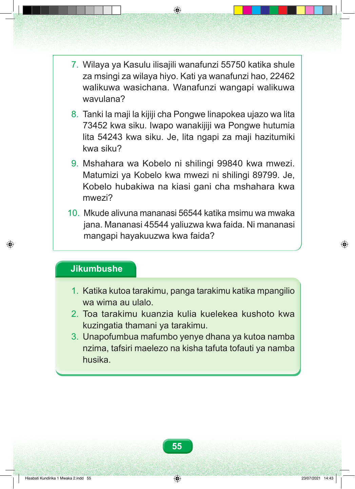

7. Wilaya ya Kasulu ilisajili wanafunzi 55750 katika shule za msingi za wilaya hiyo. Kati ya wanafunzi hao, 22462 walikuwa wasichana. Wanafunzi wangapi walikuwa wavulana? 8. Tanki la maji la kijiji cha Pongwe linapokea ujazo wa lita 73452 kwa siku. Iwapo wanakijiji wa Pongwe hutumia lita 54243 kwa siku. Je, lita ngapi za maji hazitumiki kwa siku? 9. Mshahara wa Kobelo ni shilingi 99840 kwa mwezi. Matumizi ya Kobelo kwa mwezi ni shilingi 89799. Je, Kobelo hubakiwa na kiasi gani cha mshahara kwa mwezi? 10. Mkude alivuna mananasi 56544 katika msimu wa mwaka jana. Mananasi 45544 yaliuzwa kwa faida. Ni mananasi mangapi hayakuuzwa kwa faida? Jikumbushe 1. Katika kutoa tarakimu, panga tarakimu katika mpangilio wa wima au ulalo. 2. Toa tarakimu kuanzia kulia kuelekea kushoto kwa kuzingatia thamani ya tarakimu. 3. Unapofumbua mafumbo yenye dhana ya kutoa namba nzima, tafsiri maelezo na kisha tafuta tofauti ya namba husika. 55 Hisabati Kundirika 1 Mwaka 2.indd 55 23/07/2021 14:43